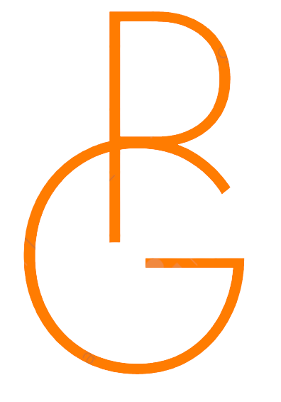
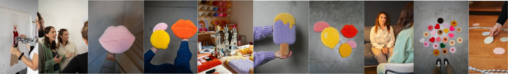

Paulina Gräfe
Ein kreatives Einstiegsseminar in Psychologie, Psychosomatik & Tufting
Gefühle sind zum Fühlen da. Aber wie gut kennen wir unsere eigenen Gefühle eigentlich? Was wollen sie uns sagen und wie hängen sie mit unseren Bedürfnissen und unserem Körper zusammen?
Bei „Gefühle tuften“ verbinden wir spannendes psychologisches Wissen mit kreativer Handarbeit und persönlicher Selbstreflexion. In gemütlicher Atmosphäre nehmen wir uns vier Stunden Zeit, um Gefühle besser zu verstehen, uns selbst ein Stück näherzukommen und dabei kreativ zu werden.
Für Menschen, die:
Gibt es ein Gefühl, das immer wieder mehr Raum einnimmt, als du möchtest?
Oder eines, das du kaum wahrnehmen kannst?
Dann ist dieser Abend eine Einladung, dein Gefühl besser zu verstehen – und einen neuen Umgang damit zu entwickeln.
Buche jetzt deinen Platz für den 23.10. in Rosenheim und erschaffe ein Symbol für eine neue Beziehung zu deinem Gefühl.
Termine & Location
Freitag 23.10.26 16-20 Uhr in der Alten Druckerei - Bürgerstiftung | Königsstraße 7b | 83022 Rosenheim
Winter 2026 Silberfabrik München
Der Workshop findet in einer Gruppe von acht Personen statt und wird nur dann durchgeführt, wenn alle acht Plätze vergeben sind.
Zahlung
Die Teilnahmegebühr beträgt 229 € pro Person inklusive Psychoedukation, geführter Selbstreflektionsübungen, Materialien und Tufting.
Nachbearbeitung & Abholung
Dein Bild wird von Doris professionell nachbearbeitet. Abholung deines Werkes nach der Fertigstellung durch die Kursleitung 14 Tage nach dem Termin am Kursort oder auf Wunsch Versand an deine Wunschadresse zzgl. Versandgebühr.